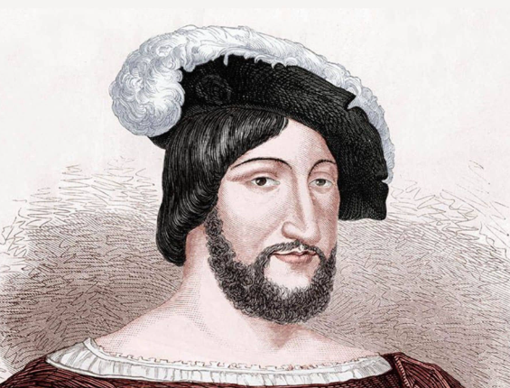
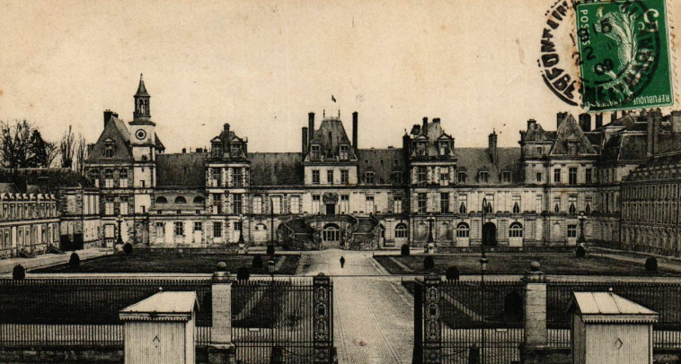

Creating the castle
12th centuryThe Castle of Fontainebleau dates back to the 12th century, marking the emergence of this historic site as an emblematic royal residence. Originally built as a fortress, the château was gradually transformed into a royal residence under the reign reign of François I in the 16th century. The first phases of construction initiated by Louis VII in the middle of the 12th century, laying the foundations for what was to become a place of power and power and prestige. However, it was really under François I that the château underwent a major architectural metamorphosis, with the introduction of the Renaissance style and the addition of sumptuous elements such as the famous François I wing. The Castle of Castle of Fontainebleau is the fruit of centuries of architectural reflecting the history and tastes of the successive sovereigns who have contributed to its greatness.

François 1er
1515 - 1547The reign of François I, which lasted from 1515 to 1547 profoundly marked the history of France, both politically both politically and culturally. François I is often regarded as the first the first Renaissance king in France, and his patronage of the arts had a significant influence on the development of art and culture and culture in the country. Under his reign, the Castle of Fontainebleau was transformed into a sumptuous residence, with the introduction of the Italian Renaissance style. François I also fostered cultural exchanges cultural exchanges with Italy, inviting artists such as Leonardo da Vinci Leonardo da Vinci to his court. On the political front, Francis I was involved in major conflicts, notably the Italian War the Italian War, where he competed with Charles V. Despite military military setbacks, his reign consolidated royal power in France and cultural foundations that have endured over the centuries. Thus, the reign of François I remains a key period in French history marked by a balance between political ambitions and artistic and artistic achievements.
Henri IV's farewell heart
1589 - 1610Henri IV, King of France from 1589 to 1610, left a significant mark on the Castle of Fontainebleau by ordering the construction of the construction of the Cour des Adieux. Built in the early 17th century, is of major symbolic importance. Henri IV, anxious to consolidate his reign and restore stability to the kingdom kingdom after the Wars of Religion, chose Fontainebleau as the location for this initiative. The Cour des Adieux was intended to mark the king's solemn departure and symbolize his unchallenged authority. The architectural design of this courtyard reflects a unique combination of symmetry and grandeur, embodying the idea of royal of royal authority, while allowing for memorable farewells. For example, Henri IV's order for the construction of the Cour des Adieux at Fontainebleau testifies to his concern to consolidate royal power and to inscribe his reign in the architectural and symbolic history history of the château.
Napoleon's abdication
1814Napoleon Bonaparte's abdication in 1814 marked a major turning point in a major turning point in European history. After a series of military defeats, notably the disastrous Russian campaign in 1812 and the defeat at the Battle of Leipzig in 1813, Napoleon found himself by the European coalitions. Faced with mounting pressure and the imminent invasion of France, Napoleon took the historic decision to abdicate on April 6, 1814. This symbolic act put an end to his imperial reign and paved the way for his exile to Elba. Napoleon's abdication also opened the door to a period of monarchic a period of monarchical restoration in France, marking the end of the of the Napoleonic era and the beginning of a new phase in the the political history of Europe.

Abdication Charles X
1830The abdication of Charles X in 1830 was a significant episode in French history. French history that marked the end of the Restoration. Charles X, the last monarch of the eldest branch of the Bourbons, had succeeded his brother Louis XVIII in 1824. His reign was marked by conservative authoritarian policies, provoking growing tensions with the tensions with the liberal opposition. The crisis reached its reached its climax with the "Four Ordinances" in July 1830, restricting political freedoms and provoking indignation. Faced with widespread opposition and the revolution, Charles X abdicated on August 2, 1830 in favor of his grandson his grandson Henri, Duke of Bordeaux. However, this abdication was quickly deemed invalid by the revolutionaries, and the and the monarchy was abolished. This led to the the advent of the July monarchy with the reign of of Louis-Philippe, marking a new chapter in France's political history of France.

German occupation
1940The German occupation of the Castle of Fontainebleau during Second World War was a dark chapter in the history of this of this emblematic site. Following the French defeat in 1940, German German occupying forces invaded France, and the Castle of Fontainebleau Fontainebleau, steeped in history and symbolism, was no exception. no exception. Occupied by Nazi troops, the château became a strategic strategic headquarters for German military operations operations in the region. During this period, the château, once the residence of French sovereigns, lost much of its lost much of its splendor, as the occupying forces used its used its sumptuous rooms for administrative and military military purposes. The German presence at Castle of Fontainebleau represented not only a physical assault on its heritage, but also a violation of its historic prestige. The occupation ended with the liberation of France in 1944, marking the gradual restoration of the château in the decades the following decades. Today, the Castle of Fontainebleau remains a place the dark days of German occupation during World War II. during the Second World War.

Nowadays
Today, the Castle of Fontainebleau remains a historic jewel of centuries of French history. Listed as a UNESCO World Heritage Site, the castle is a major attraction, drawing visitors from all over the world. Its gardens, elegant reception rooms, art galleries and royal galleries and restored royal apartments offer an immersive experience immersive experience of French history and art. The château houses an impressive collection of period furniture, tapestries, paintings and paintings and objets d'art that reflect the tastes of the sovereigns who have occupied it over the centuries. Visitors can explore the private apartments of Napoleon I, the famous horseshoe staircase the famous horseshoe staircase, the Saint-Saturnin chapel, and many other architectural treasures. In addition to its historical importance, the Castle of Fontainebleau continues to be used for official purposes, sometimes hosting cultural and diplomatic events. In this way, the Castle of Fontainebleau remains not only an essential a must-see tourist attraction, but also a lively place that the richness of its past in the heart of France.